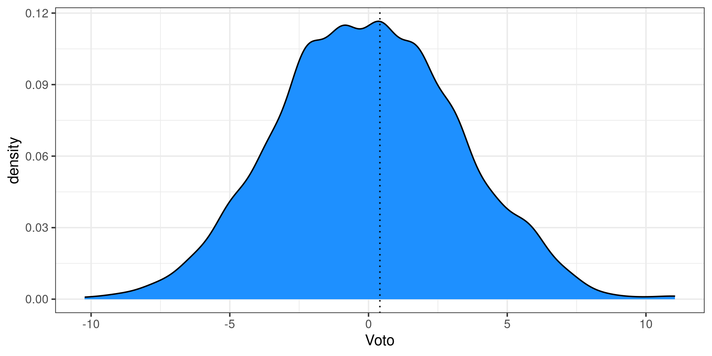

ADCOM 2025-2026
Filippo Gambarota PhD
Università di Padova
Ultimo aggiornamento: 11-03-2025
Per qualsiasi altra informazione:
#extra. Questo significa che quella specifica slide o riferimento aggiuntivo indicato è utile, interessante ma non sarà oggetto d’esame.Come riportato nel syllabus:
L’esame è scritto e consiste di 31 domande a risposta multipla. Per ogni domanda ci sono 4 alternative di risposta di cui una sola corretta. I punteggi sono assegnati nella seguente modalità:
La durata dell’esame è di 45 minuti. L’utilizzo dell’intelligenza artificiale generativa non è consentita durante l’esame.
Questa è la distribuzione simulata di 1000 student* che fanno un esame impostato in questo modo totalmente a caso.
Durante il corso faremo lezioni pratiche e lezioni più applicate con un rapporto di 3:1 circa. Le lezioni pratiche consistono nell’implementare i metodi con dati reali tramite il software R.
La conoscenza del linguaggio R non è necessaria per svolgere l’esame MA la comprensione degli esercizi e di output di analisi reali si.
L’utilizzo di R è quindi facoltativo (lo uso io durante le lezioni spiegando tutto quello che faccio) ma fortemente consigliato per capire meglio i concetti.
Tutto quello (quasi) che faccio in R si può fare in qualsiasi altro linguaggio/software (SPSS, Jamovi, JASP, Excel, etc.). Qualche volta vedremo qualche applicazione usando alternative (principalmente Jamovi).
A grandi linee1 il programma sarà:
Inoltre, se abbiamo tempo ci saranno degli approfondimenti molto pratici:
Il programma è denso, tutte le slide e materiali saranno a disposizione. Tuttavia la mia priorità è passarvi al meglio i concetti principali.
Preferisco rimanere di più su qualcosa di non chiaro piuttosto di procedere su molte cose poco chiare o completamente non chiare.
Il punto 1 di prima, è particolarmente vero a patto che io sappia quello che non è chiaro. Quindi:
There are no stupid questions, only stupid answers
Da psicologo abilitato assumo un atteggiamento genuinamente non giudicante. Le domande non sono intelligenti o stupide ma sono utili (quelle che vengono fatte) o inutili (quelle che non vengono fatte).
Per identificare meglio gli argomenti critici e quelli da ripetere ho creato una board su Padlet. Per ogni macro-argomento c’è una sezione e potete (in modo anonimo) mettere domande, dubbi, commenti.
https://unipd.padlet.org/filippogambarota/adcom2526
Prima di cominciare la lezione, dedichiamo una decina di minuti a rivedere gli argomenti critici. L’idea è che scriviate le domande dopo la lezione, e le rivediamo in quella dopo.
Se non emerge nessuna domanda a lezione (preferibilmente) o su Padlet, do per scontata sia per le lezioni future che per l’esame, l’assenza di dubbi e quindi la chiarezza di quell’argomento. Think carefully 🙃.
Tutto il materiale come slides, esercizi, approfondimenti, etc. si trova su Moodle. In realtà, su moodle ci sono solo dei link al sito che ho creato per il corso https://stat-teaching.github.io/adcom.
Trovate lo stesso materiale ma è più semplice e veloce accedere al sito esterno. Ci sono anche tutti i link utili come il Padlet, etc. Vi consiglio di metterlo tra i bookmarks.
Le lezioni saranno organizzate in questo modo:
Nel caso di lezioni pratiche (1 ogni 3 circa), useremo un dataset il più possibile rilevante per l’ambito e di interesse e con R o altro applicheremo dei concetti studiati in precedenza.
Il laboratorio verrà introdotto direttamente alla prima lezione. L’obiettivo è quello di:
Ovviamente seppur condividendo alcuni argomenti, il programma del corso e quello del laboratorio sono totalmente indipendenti.
Le attività di didattica integrativa sono considerate delle ore aggiuntive e facoltative per chiarire, approfondire ed esercitarsi sui contenuti del corso. Alcune precisazioni: